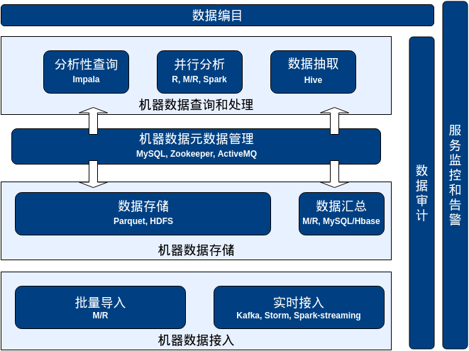

K2Data 机器大数据平台 KMX（K2Data Machine Data Management and Analytics Platform）是国内首款针对机器数据特点研制的大数据平台，实现了机器数据高速接入、存储、管理、查询和分析，其内置的机器数据模型简化了工业数据分析和应用开发，能够十倍缩短工业大数据平台实施上线的周期。

KMX提供：
- 机器数据模型管理 - KMX提供预置的机器数据模型，结构化地描述典型的机器产生的时间序列数据，方便数据应用开发（用查询服务）和数据分析师（用分析工具）对KMX存储的机器数据进行访问。同时，机器数据模型版本管理能够帮助用户屏蔽传感器增加、更名等元数据变更对数据接入和使用产生的影响。
- 机器数据接入 - 将7*24持续产生的海量机器数据实时接入数据仓库，KMX能够自动应对设备及其传感器发生的变化（例如增加、删除）而无需更新数据接入程序，KMX的持久化消息队列提供可水平扩展和容错的接入能力。
- 机器数据存储 - 对于实时和批量接入KMX的机器数据，KMX根据预置的机器数据模型对数据进行清洗、转换和导入数据仓库，KMX将持续接入的消息转换为列式存储，并且基于写前日志（Write-ahead-logging）对于数据存储任务进行事务性管理，保证系统发生故障的时候，没有入库的数据能够一致地从临时区恢复。KMX后台的定期合并（compaction）任务会应对7*24持续接入的小批文件对于分布式文件系统元数据开销和并行分析任务个数的影响，确保数据存储系统能够持续数年接入秒级机器数据。
- 机器数据查询 - KMX的机器数据查询服务整合了原始数据及其统计汇总信息，弥补了底层SQL-on-Hadoop查询引擎在资源利用率和响应时间上的局限性，为应用提供了简单的机器数据分析性查询服务。同时，KMX的查询服务是基于预置的机器数据模型，能够从设备id、时间范围、传感器等维度高效地响应机器数据查询请求，用户无需关心数据在平台的物理存储信息。
- 机器数据分析 - KMX提供非入侵式的并行化引擎，帮助行业分析师通过界面向导配置，把单机版的R分析程序并行化运行在KMX存储的机器数据上，并提供作业和结果管理，降低了并行化分析程序的开发门槛。
- 数据编目 - KMX提供数据编目工具，根据机器数据模型，将所管理的机器、传感器及其对应接入的动态数据统计概况，直观地展示给应用开发人员和分析师，同时方便数据管理员管理机器数据资产。同时，KMX数据编目工具还汇总了关系数据、非结构化数据的描述信息，能够为数据管理员提供大数据平台所管理的数据的全貌。
- 监控和告警 - KMX从数据和服务两个层面的提供管控功能。KMX数据审计能够监控数据接入的总量和异常量，并且根据预定义的阈值进行告警，帮助数据管理员第一时间发现数据接入问题；KMX服务监控和告警，能够帮助系统管理员第一时间发现接入、存储、查询、分析等服务的异常。